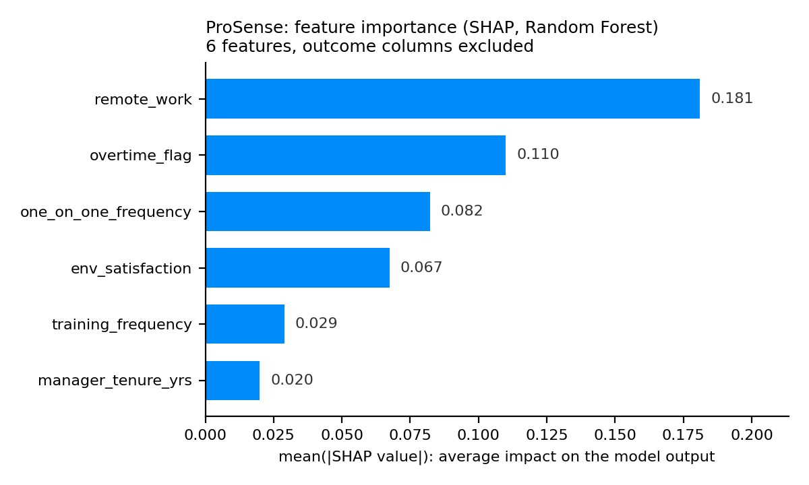
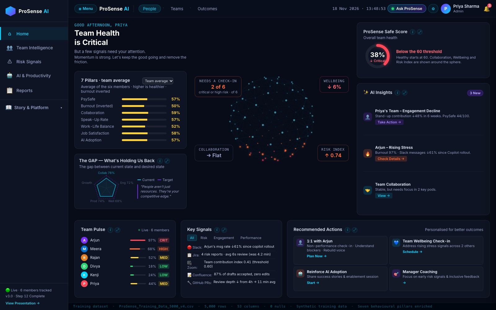
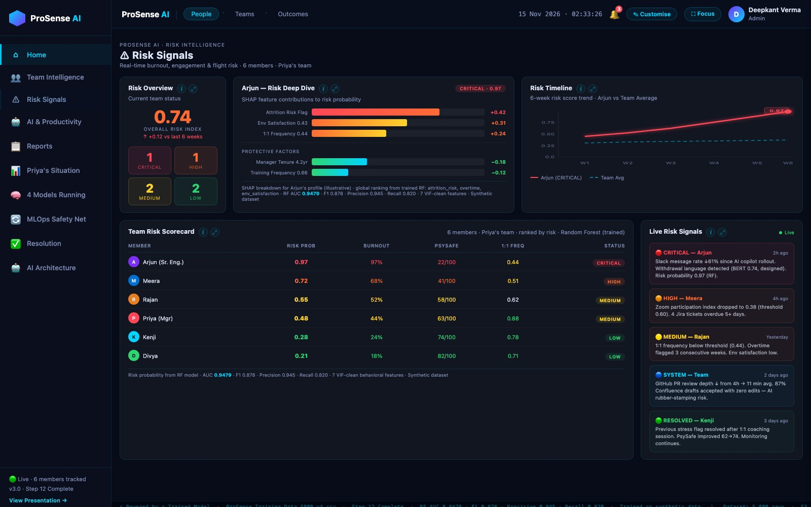
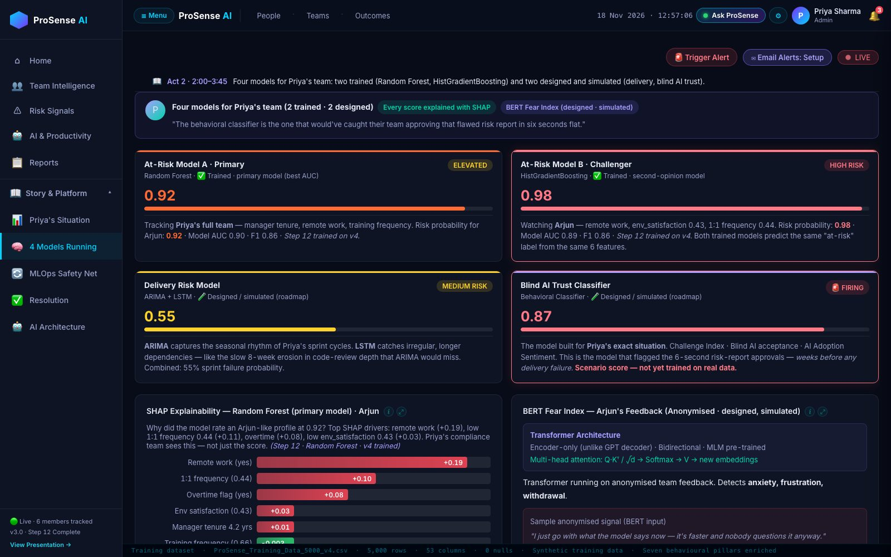
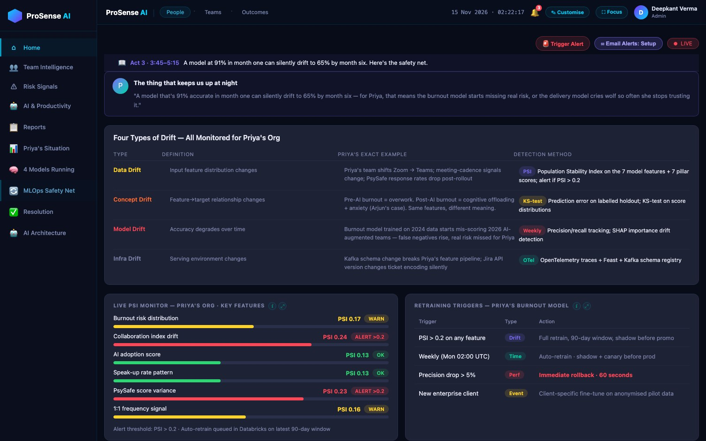
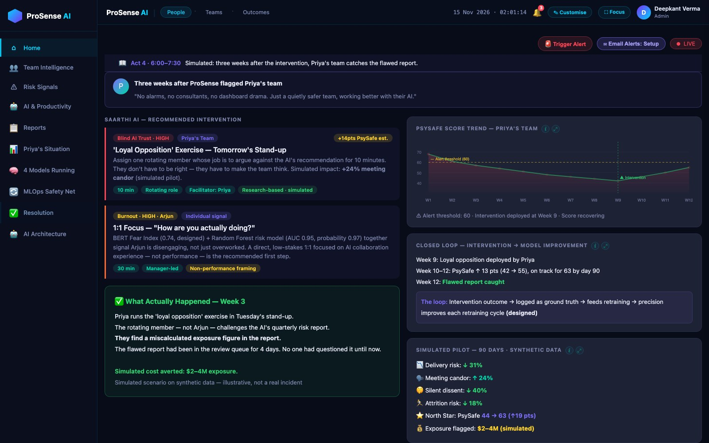
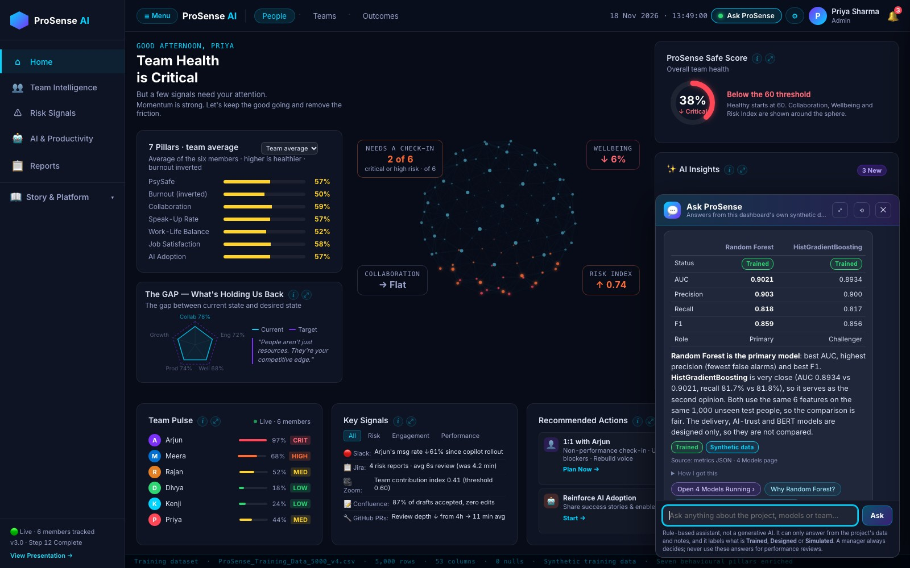

Seeing the hidden human risk in AI-era teams before it turns into a crisis
Deepkant Verma · November 2026 · dashboard v2.18
Live dashboard: https://deepkantmba-collab.github.io/prosense-dashboard/ · All data in this project is synthetic or public
Use ← → arrow keys or the buttons below to move between slides
Companies roll out AI tools and see speed go up. They don't see people going quiet, burning out, and approving AI work without checking it. ProSense makes that hidden risk visible, early enough for a manager to help.
Priya is an engineering manager. Six months ago her team got an AI coding assistant. On paper, things look great. Underneath, something quietly changed.
“On paper, velocity went up. But her senior engineer stopped pushing back in stand-ups. Her team started approving AI-generated risk reports in seconds. Nobody noticed.”
— Act 1 of the ProSense storyWe blended 4 public datasets into one training table and enriched it with synthetic team signals. No real company or employee data is used anywhere.
| Public dataset | Rows |
|---|---|
| IBM HR Analytics | 1,575 |
| Burnout (work from home) | 1,540 |
| Employee Engagement Survey | 1,018 |
| Mental Health in Tech | 867 |
| Total | 5,000 |
| Version | Cols | What was added |
|---|---|---|
| v1 | 25 | Raw blended data |
| v2 | 29 | + Psychological safety |
| v3 | 41 | + Burnout, collaboration, speak-up |
| v4 (current) | 53 | + Work-life, job satisfaction, AI adoption |
Each person gets a score on 7 pillars. Scores come from a custom phrase engine: 60 workplace phrases × 7 pillars = 420 phrases, each with a weight.
| Pillar | r | Rating |
|---|---|---|
| Collaboration | 0.827 | Strongest |
| Psychological safety | 0.803 | Strong |
| Burnout | 0.771 | Strong |
| Speak-up rate | 0.699 | Good |
| AI adoption | 0.469 | Moderate |
| Job satisfaction | 0.460 | Moderate |
| Work-life balance | 0.305 | Weak |
| Feature | Meaning |
|---|---|
| overtime_flag | Regular overtime |
| env_satisfaction | Happy with environment |
| remote_work | Remote or office |
| one_on_one_frequency | How often 1:1s happen |
| training_frequency | Learning time |
| manager_tenure_yrs | Years with manager |
| Model | Job in plain words | Status | Score |
|---|---|---|---|
| Random Forest (primary) | Predicts at-risk vs healthy from the 6 features | ✅ Trained | AUC 0.902 |
| HistGradientBoosting (challenger) | Same question, gives a second opinion | ✅ Trained | AUC 0.893 |
| BERT Fear Index | Reads anonymised feedback for withdrawal or fear language | 🧪 Designed / simulated | 0.74 (scenario) |
| Delivery model (ARIMA + LSTM) | Forecasts sprint delivery risk | 🧪 Designed / simulated | 0.55 (scenario) |
| Blind AI Trust classifier | Spots "rubber-stamping" of AI output | 🧪 Designed / simulated | 0.87 (scenario) |
| Said AT RISK | Said HEALTHY | |
|---|---|---|
| Really at risk (671) | 549 caught | 122 missed |
| Really healthy (329) | 59 false alarms | 270 correctly cleared |
| Model | CV AUC | Test AUC | Accuracy |
|---|---|---|---|
| Random Forest (primary) | 0.897 ± 0.005 | 0.902 | 81.9% |
| HistGradientBoosting | 0.886 ± 0.008 | 0.893 | 81.6% |
| Logistic regression | 0.840 ± 0.009 | 0.834 | 77.8% |
| Always say "at risk" | 0.500 | 0.500 | 67.1% |

| Factor | Push on risk |
|---|---|
| Remote work: yes | +0.19 |
| Few 1:1s (0.44) | +0.11 |
| Overtime: yes | +0.08 |
| Low environment satisfaction (0.43) | +0.03 |
| Manager tenure 4.2 years | +0.01 |
| Training frequency 0.66 | ≈ 0 |
| Member | Role | Risk | Burnout | PsySafe | AI adoption | Status |
|---|---|---|---|---|---|---|
| Arjun Kumar | Sr Software Eng. | 0.97 | 97% | 22 | 23% | CRITICAL |
| Meera Singh | Product Manager | 0.72 | 68% | 41 | 45% | HIGH |
| Rajan Mehta | DevOps | 0.55 | 52% | 58 | 61% | MEDIUM |
| Priya Sharma | Eng. Manager | 0.48 | 44% | 63 | 52% | MEDIUM |
| Kenji Tanaka | Data Analyst | 0.28 | 24% | 74 | 85% | LOW |
| Divya Nair | UX Designer | 0.21 | 18% | 82 | 78% | LOW |






We ran a real drift check (PSI and KS test) on the synthetic data: today's data against the training data, then a stress test with 30% more remote work, 25% more overtime and fewer 1:1s.
| If… | Then… |
|---|---|
| Data drifts (PSI > 0.2) | Retrain on the latest 90 days, shadow-test first |
| Every Monday | Scheduled retrain, then shadow, then canary |
| Precision drops > 5% | Roll back in 60 seconds |
Week 9: Priya runs a "loyal opposition" exercise (one person argues against the AI for 10 minutes) and has a non-performance 1:1 with Arjun. In week 12 the team catches a flawed AI report (simulated).
All people, teams and numbers are fictional or synthetic · Built for academic purposes